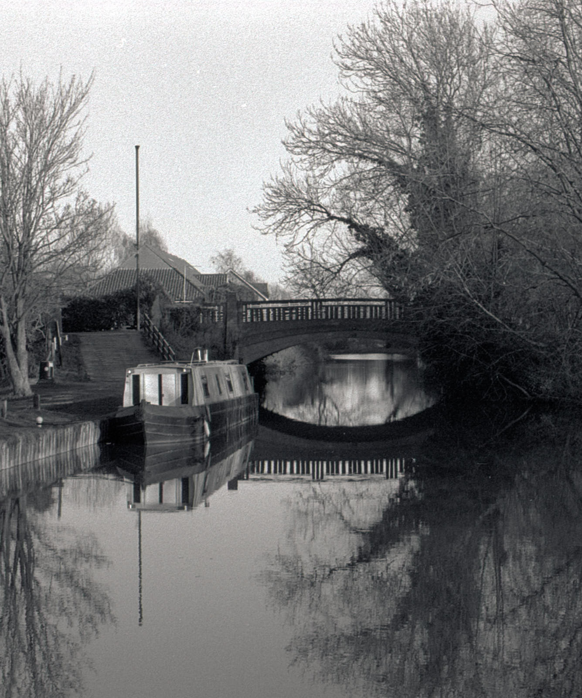
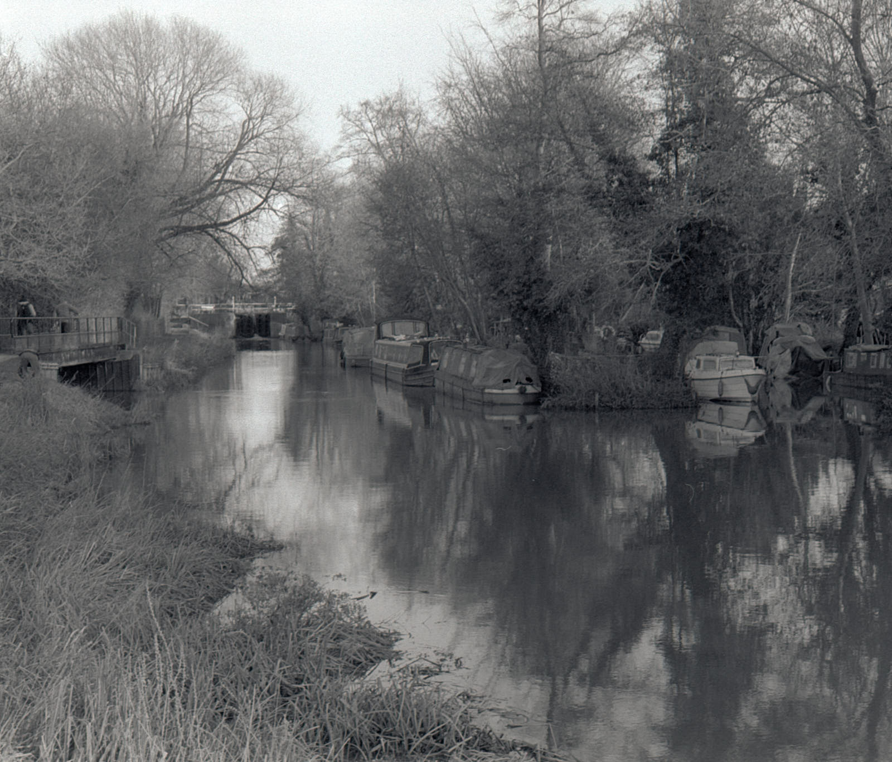
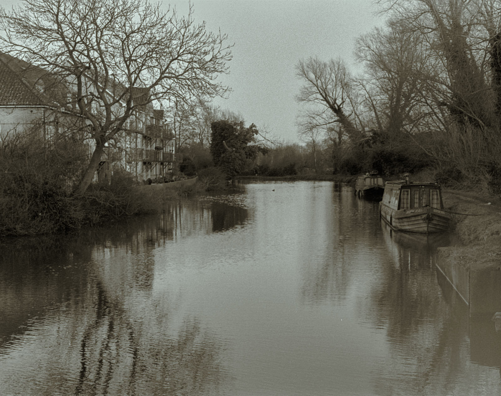

First experiences with Ilford Delta 400 35mm film.
 Earlsferry, Fife.
Earlsferry, Fife.
Ilford Delta is a well-known black and white film from the famous UK manufacturer that has been around for almost 30 years. I put a roll of 400 through a Nikon FM. This post describes some of the images I made and what I did with them. The film was exposed over the first few weeks of 2020 and sent to AG Photographic in Birmingham for developing.
Harlow Water
We had to take a trip to Essex in January and had time to take a walk along the River Stort that runs through a generic-looking town on the outskirts of London. The river seems clean enough to sustain life, as there were people fishing along the banks. The first image here is a crop: bottom right you can see fading from what looks like a light leak in the camera. I think it’s something to do with the back plate. I bought this camera from eBay to replace my original 1970s Nikon FM that has a condemned shutter, and the back doesn’t shut cleanly with the satisfying click of my original.
 Harlow Water
Not sure I’d be eating any of the fish they caught, as there were dog walkers kicking their poochy-poo directly from where it was dropped on the tow path into the river. I asked one of the fishermen if this is normal behaviour round here. He said everybody did it. I was disappointed with that level of cultural disrespect amongst the dog-walking people of this town towards their environment. Despite being in the middle of an industrial estate, this little stretch of river, with its abandoned house-boats, is pretty, and no doubt home to a lot of life. It’s worth exploring - there’s more information here.
 Harlow Water
The next image has been adjusted for tone in Capture One for a more vintage look. This might offend some “analogue” purists but I’m just playing here. There aren’t any rules, and Capture One is a nice tool for messing about with images that might otherwise be considered uninteresting.
 Harlow Mill
The Fife Coast
When I next picked up the camera, we were up the East Neuk. I continued the split toning exercise with the next two frames, toning the shadows blue and the highlights in the complementary yellow.
Bass Rock
Here, the Forth River basks in sunrays from an approaching storm. The toning enhances, I think the menacing clouds and waters. For monochrome images, it might seem weird to re-introduce colour but I think as an artistic technique, it enhances these shore photos. It didn’t work for me with the Harlow Water images.
Forth River
Kinghorn Beach
The last of these photographs was taken a few days later, down on the beach at Kinghorn. It is untoned but suffers with the same light leak problem I talked about above. This image was taken in portrait orientation and cropped slightly to make use of the false flare. I think it looks OK.
 Kinghorn
Kinghorn
Summary of the results
Reviews of this film suggest that it is very sharp, although I am sure that this is true only when in better hands. I am not convinced that I get the best results by sending it to AG Photographic, although I don’t doubt they are the best of the labs out there. Perhaps this is just a manifestation of the Dunning-Kruger effect and I’ll change my mind once I learn more about it.
When I took a roll of photographs back in the 1970’s and 1980’s, I would consider it a success if I got one or two good frames from a roll of 135. I think I have half a dozen here that I’m pleased with, despite the leaky light problem. A significant factor in this increased success rate must be the greater opportunity there is to work with the images post-processing. Even the scanning tool 1 allows me to straighten the horizon.
Next steps
I will try this film again and process it myself to see if I get better results, but also maybe I ought to stop buying old cameras online and expecting them to perform optimally without at least letting someone who knows what they are doing check them over for me.
Notes
Frame 24 Bass Rocks
This film was in my Nikon FM between 10th January and 14th March 2020. It was processed by AG Photolab. I switched lens part way through this film to a new 28mm f/2.8 Nikon which is very much better than the E series lens I had been using. At the same time, I added a Tiffen Yellow filter which made sky contrast much better too.
| Brand | Type | ISO | Format | Exposures | Camera | Lens |
|---|---|---|---|---|---|---|
| Ilford | Delta | 400 | 35mm | 36 | Nikon FM | Frames 1 - 20 Nikon 50mm f/1.8 Series E Frames 20 - 36 Nikon AI-s 28mm f/2.8 |
| Frame | Image | Aperture | Shutter | Comment |
|---|---|---|---|---|
| 1. | Euston | f/11 | 1/2s | 10 Jan. Hand held |
| 2. | Preston station | f/11 | 1/4s | |
| 3. | Preston station | f/11 | 1/15s | |
| 4. | Preston station | f/1.8 | 1/125s | |
| 5. | Earlsferry | f/16 | 1/125s | 12th Jan. |
| 6. | Shore | f/11 | 1/125s | |
| 7. | Waves | f/4 | 1/1000s | |
| 8. | f/22 | 1/15s | ||
| 9. | f/8 | 1/250s | ||
| 10. | f/16 | 1/60s | Hand held | |
| 11. | Sunset | f/22 | 1/125s | |
| 12-13. | Birds | f/8 | 1/250s | |
| 14. | f/11 | 1/250s | ||
| 15-17. | Crashing waves | f/2.8 | 1/1000s | |
| 18. | Harlow water | f/22 | 1/60s | 18th Jan |
| 19. | Harlow water | f/11 | 1/30s | |
| 20. | Harlow mill lock 8 | f/11 | 1/125s | River stort |
| 21. | Culross sunset | f/5.6 | 1/125s | 26 Feb 28mm lens yellow filter |
| 22. | Bass rock thru wall | f/22 | 1/125s | 8 March 28mm lens yellow filter - The East Neuk |
| 23. | KM at work | f/22 | 1/60s | Hand held |
| 24. | Bass rocks | f/16 | 1/125s | |
| 25-6. | Shafts/Edinburgh | f/16 | 1/125s | |
| 27. | Shafts | f/22 | 1/60 | |
| 28-30. | shafts and rainbow | f/11 | 1/60s | |
| 31-36. | Kinghorn Beach | f/16 | 1/500s | 14th March |
Footnotes
SilverFast 8, which is actually bloody awful software with a functionality and interface from the 1990’s. This software came with the Epson V600 scanner I bought from Wex and was provided by Epson because their own software doesn’t work at all with OSX.↩︎